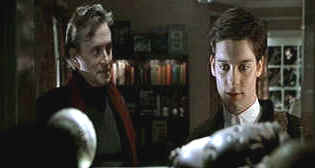

| Wonder Boys/A,A |
| Paramount/2000/112/ANA
2.35 |
Wonder Boys is a
special treat. The story of middle-aged writer/professor Grady Tripp, and his student, James Leer,
both facing the challenge of leaving forms of adolescence to move on to a a better understanding of
themselves. Mid and early life crisis is addressed with the most natural comic flow imaginable. All
the humor derives from the personality of the characters. The situations are often very funny, but
they are organic to the film. I don’t know how this perceptive film escaped audiences. Was it the
advertising campaign? They tried promoting it twice to no avail. Perhaps the difficulty in
describing the subject matter was too tall a task for the PR machine. In any event, don't make the
mistake of missing this perceptive, sassy, funny treatise on life.
 |
| A safe view. ©Paramount |
Grady Tripp is a wonderful role for Michael Douglas. Sloppy, unafraid to look older, Douglas's
Tripp is a memory of great sixties movie characters. Douglas defines the complexities of the
character in flux; Tripp is running the rapids of his life and must steer his life to calm waters.
The consistently terrific Tobey Maguire, a young actor is specializes in delivering roles with
unique perception, does it again it Wonder Boys. James Leer marches to his own beat,
with an off-kilter sense of humor, and some significant potholes to reconnoiter. Francis
McDormand has some nice moments as University chancellor Sarah Gaskell, Tripp's married lover and
Robert Downey, Jr. breezily creates another memorable screen character as Terry Crabtree, Tripp's
literary agent.
Director Curtis Hanson really flexes his filmmaking muscles in Wonder Boys,
taking on the fresh script from Steve Kloves (Adapted from a novel by Michael Chabon) and
turning it into savvy examination of lives in crisis. Hanson's previous successes featured
significant doses of testosterone from the choppy waters of The River Wild to the sleazy
night lights of L.A.
Confidential. Hanson makes Wonder Boys a riveting journey composed of many small wonders.
Dante Spinotti's cinematography captures the mood of the material to perfection and the music by
Christopher Young and choice of songs is brilliantly evocative. What an outstanding effort on all
parts.
Wonder Boys is a special edition, but limited in scope. There’s a ten
minute making of with interviews snippets of cast and director Hanson. There’s also a interactive
map of the Pittsburgh locales with narration descriptions of the settings by Hanson. The bridge
segment is most interesting. It’s a hint of the effort that’s often thrown away by artists in
order to reach an audience subliminally. Hanson also discusses the songs as they appear in the
film. A Bob Dylan music video is less than wonderful.
Paramount delivers Wonder Boys as a wonderful DVD, with
pristine film-like images consistently on display. Sharp, with no over enhancement; you can look
deep into the angst reflected in the characters’ eyes. The moody color schemes look natural.
Color saturation is stable without excess juicing. This is not exactly a surround sound
spectacular, but the music and dialogue and ambient details are mixed in perfect harmony.
|
|
|
|

The
Movie Poster Archive includes extensive poster images from the films of stars like Susan Hayward,
Kirk Douglas, Katharine Hepburn and many more. Our featured star is Gregory Peck

October Sky/A,A

Johnston’s glorious montage work accompanied by Marc Isham's stunning Americana score are reason
enough for watching this exquisite movie.

A self-proclaimed bastion of irreverence place where Joe
Public smacks the heck out of the studio execs that treat us like cattle.

News, information, features about current films in theaters and in the
pipeline. Easy to use interface.

The official site for information about the great comic director. A treat for connoisseurs of
classic Hollywood madcap.

Selections from the Feature Archive
include articles on Akira Kurosawa, Frank
Darabont, Blonde Bimbos, Hollywood Street Gangs, or Vietnam: The
Hollywood Pariah, and many more....
Transferring Zoetrope's Vision

American Zoetrope's Technical Director Kim Aubry talks about bringing the studios product out in
the best light. Click on the image for the interview.

Tucker: The Man and His Dream is beautifully filmed with loving attention to detail.
|